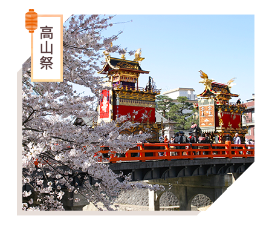
被譽為日本三大美祭之一的高山祭，每年分別於春、秋兩季舉辦；春季高山祭又名山王祭，秋季山王祭則又名為八幡祭。
相傳起源於1585至1692年間的高山祭，可說是日本最華麗的祭典之一；御巡幸（祭祀遊行）是白天活動的最大亮點，結合傳統舞樂儀式和屋台遊行，十分熱鬧，充滿節慶氣息；夜祭更是活動最高潮，當夜幕降臨，百來盞燈籠點亮，屋台顯得更炫目，展現江戶時期迄今的精湛技藝，錯過可惜！
相傳起源於1585至1692年間的高山祭，可說是日本最華麗的祭典之一；御巡幸（祭祀遊行）是白天活動的最大亮點，結合傳統舞樂儀式和屋台遊行，十分熱鬧，充滿節慶氣息；夜祭更是活動最高潮，當夜幕降臨，百來盞燈籠點亮，屋台顯得更炫目，展現江戶時期迄今的精湛技藝，錯過可惜！
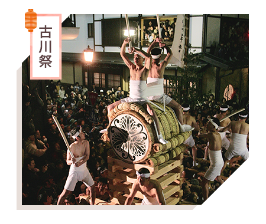
被聯合國教科文組織列為非物質文化遺產的古川祭，同時也是日本三大裸祭之一，是飛驒地區氣多若宮神社每年固定於4月19、20日舉行的祭典，由動感十足、激烈壯闊的起太鼓儀式及豪華絢麗、精巧優美的屋台行列交織出有動有靜的祭典儀式。
古川人堅持保留傳統文化，年年動員所有居民參與古川祭，凝聚濃厚的當地文化特色，讓所有人感受到他們對於自身文化的執著，也讓古川祭成為值得珍惜的祭典傳統。
古川人堅持保留傳統文化，年年動員所有居民參與古川祭，凝聚濃厚的當地文化特色，讓所有人感受到他們對於自身文化的執著，也讓古川祭成為值得珍惜的祭典傳統。
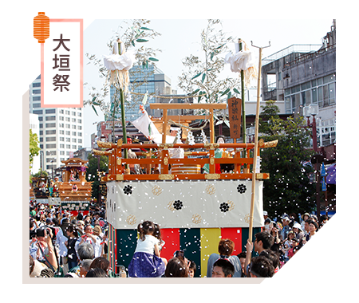
起源於慶安元年（1648年）的大垣祭，流傳至今已經370年，於2016年被登錄為非物質文化遺產，是美濃地區的代表慶典活動。雖然13輛屋台（軕）在數百年間曾歷經過天災戰亂的毀壞，然而都被細心修復與再造，每一輛屋台迄今仍各具特色，無論是造型或色彩，都非常華美。
大垣祭是從早到晚延續一整天的祭典活動，前一天還有預演，祭典期間整個大垣都非常熱鬧，是當地引以為傲的傳統祭典。
大垣祭是從早到晚延續一整天的祭典活動，前一天還有預演，祭典期間整個大垣都非常熱鬧，是當地引以為傲的傳統祭典。
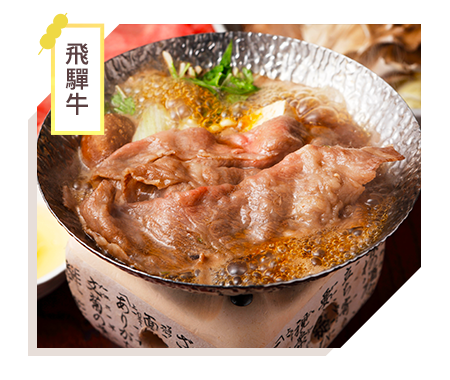
必須於當地飼養14個月以上，並被評為A3等級以上，才能被評為飛驒牛。口感柔軟、入口即化，無論是刺身、牛排、燒烤都能品嘗出飛驒牛的獨特美味。
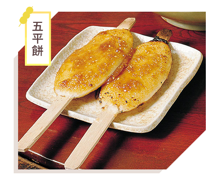
日本中部地方山谷地區流傳的鄉土料理，在電影《你的名字》中也曾出現過，據說起源於江戶時代的木曾；由於形狀像供奉神明的御幣，因此又名御幣餅。
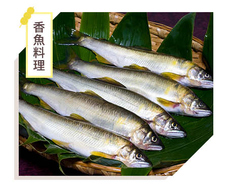
天然香魚盛產於5月至10月底，其中「郡上香魚」被譽為日本第一，肉質柔軟豐滿，無論塩燒或做成生魚片料理，都是期間限定的極上美味。
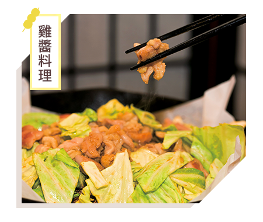
南飛驒與郡上地區的知名鄉土料理，將雞肉以醬油和味噌為基底的醬料醃過後，與高麗菜、紅蘿蔔等不同蔬菜拌炒，是非常下飯的料理呢！
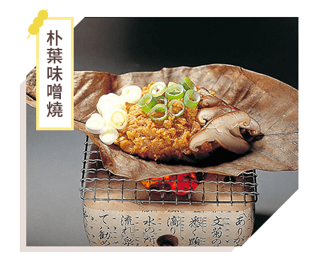
樸實的朴葉味噌燒是飛驒高山著名的鄉土料理，在朴葉上放上自家特製的味噌、菇類、蔬菜等食材，在小型的桌上烤爐慢烤，十分美味！
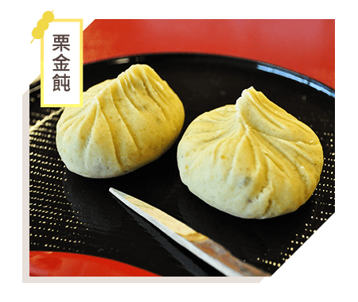
岐阜美濃東部所出產的栗金飩是岐阜季節限定的名產，原料相當單純，只有當年採收的栗子和砂糖，因此保存期限短，卻是最能品嘗栗子原味的高級和菓子喔！
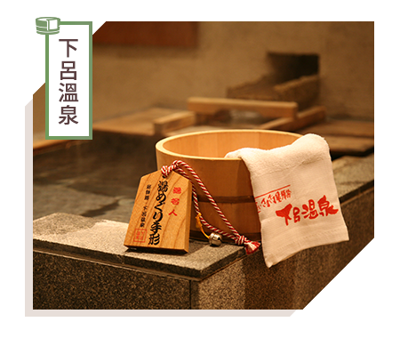
從德川家康時代就被列為日本三大名泉之一，有「美人湯」別名的下呂溫泉，據說歷史可追溯至千年前。溫泉街上隨處可見免費的足浴，鄰近溫泉街還有「下呂溫泉合掌村」，非常值得體驗。
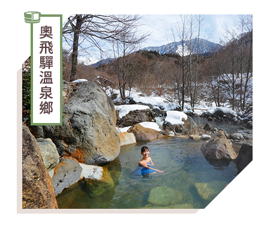
由平湯溫泉、櫪尾溫泉、新穗高溫泉、新平湯溫泉及福地溫泉五個溫泉勝地組成，露天風呂的數量為日本溫泉鄉第一，四季各具風情，冬季的「奧飛驒冬物語」各式各樣的活動讓冬季更為精彩。
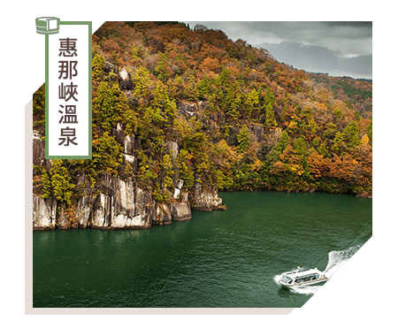
為日本水壩湖百選之一，攔截木曾川建造水壩而形成的人工湖與天然形成的斷崖絕壁完美結合出令人讚嘆的美景。惠那峽旁的溫泉坐擁峽谷美景，尤其秋季楓紅時，泡湯同時便能欣賞峽谷紅葉美景，非常享受！